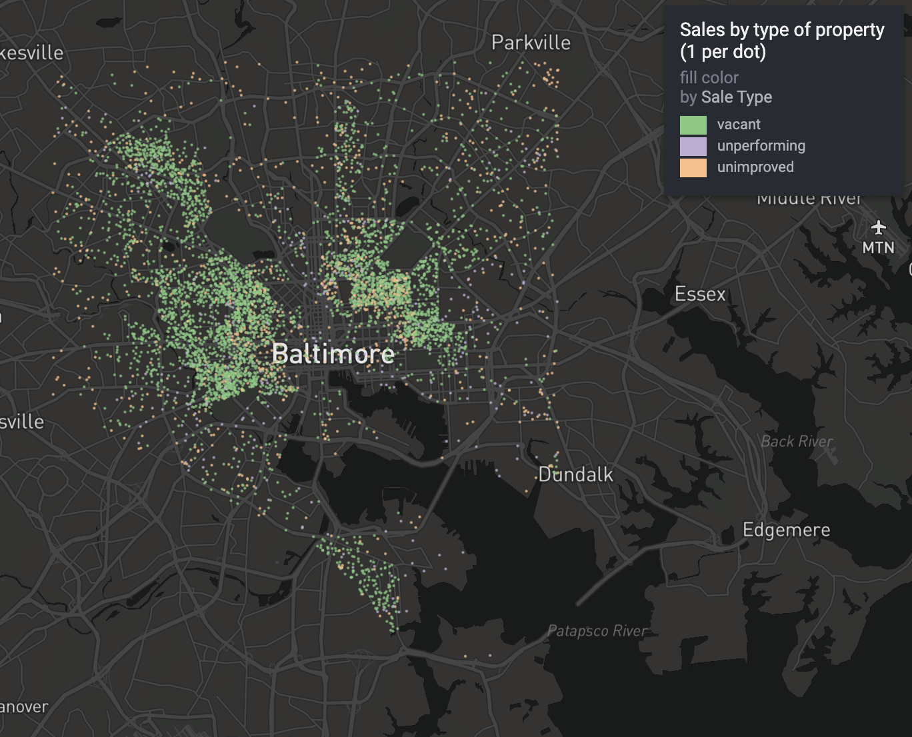

# Use this to a MIT License to a project
usethis::use_mit_license()✔ Setting active project to
"/Users/jspokes/Documents/R_Projects/Final_Project_Presentation".An analysis of sales of real property over the last five years in Baltimore, compared with assessed prices. This project aims to determine whether there is a systematic issue with assessments in the state of maryland assigning low values to vacant homes and property.
Most of the data used in this project is too large to be uploaded to github.All of the data except for one table is publicly available with both an API endpoint and the ability to download through an open data portal. I will provide both for all of those where it is available in addition to a public repository link where the extracts used in these analyses are available.
This is not available through the Baltimore Open Data portal.
The Analysis scripts are in the “R” folder and are numbered in the order described in this readme in addition to being named the same as their header. RDS objects or OGC geopackages are used as intermediate objects
This first script brings together the city and state property information datasets into a more easily usable table. The city and state real property datasets both have over 100 columns, much of it unneeded for this analysis. First, we trim the Baltimore dataset and then join it to the Maryland state set with the BLOCKLOT identifier in order to get the account ID for each property. Then, we join the CAMA datasets to get the land use description that we will utilize for categorization.
This script focuses on the sales stored in the state real property dataset. We are first going to take those and pivot them to a long format in order to get tidy sales data. I was unsure how to approach the next two steps so I asked for chatGPT assistance. There is an elegant method for categorizing sales as vacant or non-vacant based on the date ranges provided in the VBN data with a join.
Next, we assign the assessed Base and Current Cycle values to the three years they represent. Maryland’s State Department of Assessments and Taxation works in a three-year cycle. For this, I also had ChatGPT help in writing a scripted that translated these ranges into long format.
The last two chunks of this script represent subjective choices on my part that affect the analysis. First, I filter out sales where the price is represented as $0 or the assessment is represented as $0. Zero dollar sales usually represent a transfer of property and have no bearing on its value, while the assessments are likely in error as every property has at least some value. Next, I group and combine sales that are the same date, price, block, and type of sale since these are likely to be grouped purchases. This is a data quality issue because the state fails to separate the price paid for individual proeperties when many are involved in a transfer.
The first two scripts do most of the heavy lifting aside from identification of sales and the calculation of the price ratio. This script brings the intermediate tables together to label the sale with a land use type. We classify properties with the NO_IMPRV marker from the Baltimore Real Property data and with no land use classification from the state CAMA data as unimproved sales. Any sales labeled vacant by the previous script are identified as vacant. Last, any properties labeled AUTO or WAREHOUSE are likely underperforming properties. Anything else is classified as a regular sale.
The price ratio is determined as the Assessed Value at the time of sale divided by the price of the sale. So if it’s over 1, the property is overassessed and under 1 is underassessed. The second part of this script splits and summarises the sales, aggregating them by neighborhood and identifier.
Frustratingly, after the analysis was completed, we arrive at a point showing limited interesting insight. The lack of historical assessments in the public-facing data in addition to the difficulty of identifying sales where a home might have been substantially renovated before make the data on vacant sales quite dirty. With the intended deadline for my project and my grade dependent on submission, I am satisfied with the work done and always love representing Baltimore in map form even if it’s not so elegant. I hope that I will be able to continue this work in the coming years.
I like using this visualization first because it shows that Baltimore has robust property sales despite the misconceptions about the state of the city. It also shows the scale of the issue being dealt with, which is that there are still a lot of vacant property to be dealt with.
#### Vacant, Unimproved and Underperforming only

My name is Joshua Spokes, I am a GIS Analyst with the City of Baltimore’s Department of Public Works and an enthusiast property tax nerd. This is an extension of my project looking at property values in southeast Baltimore (https://github.com/brokenspokes/Southeast_Patterson) and exploring how property that is underutilized frequently gets a pass on their property tax bill. I will continue to build more analyses like this in the coming years as we work towards fairer assessments and taxation in our city and state.
The README should continue with an longer description (using sub-headings to break up text as needed).
For data analysis projects, here are a few key elements to consider including in your README:
Please add a license to your repository and your README with usethis::use_mit_license() or another usethis license function.
# Use this to a MIT License to a project
usethis::use_mit_license()✔ Setting active project to
"/Users/jspokes/Documents/R_Projects/Final_Project_Presentation".This template is a plain Markdown file. You can alternatively create a README using a RMarkdown file or a Quarto document that you render to a GitHub Flavored Markdown (GFM) document.
# Use quarto to render a qmd README file
quarto::quarto_render("README.qmd", "gfm")See Guide to writing “readme” style metadata for more information on documenting reusable data publications.
For more general advice, take a look at Make a README.